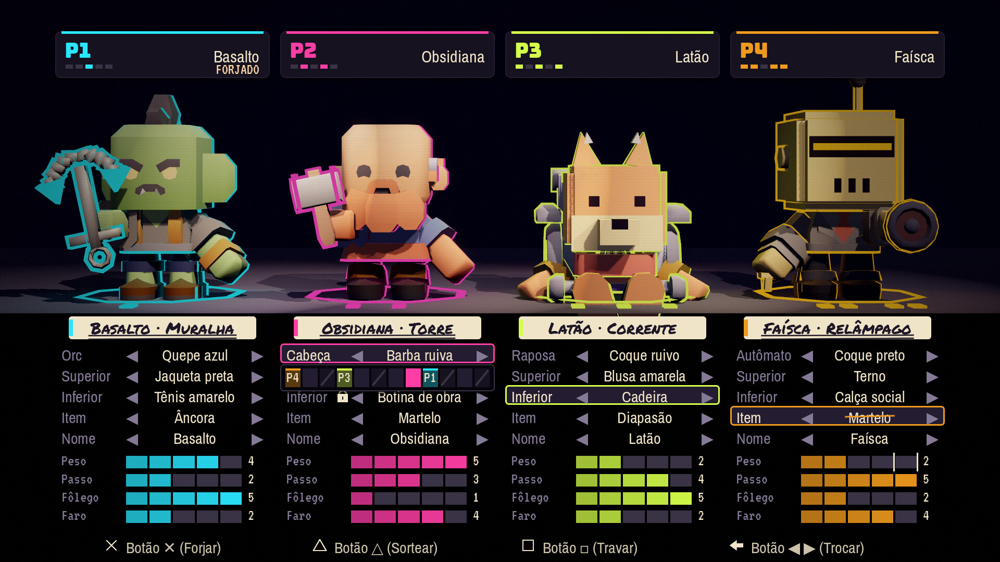
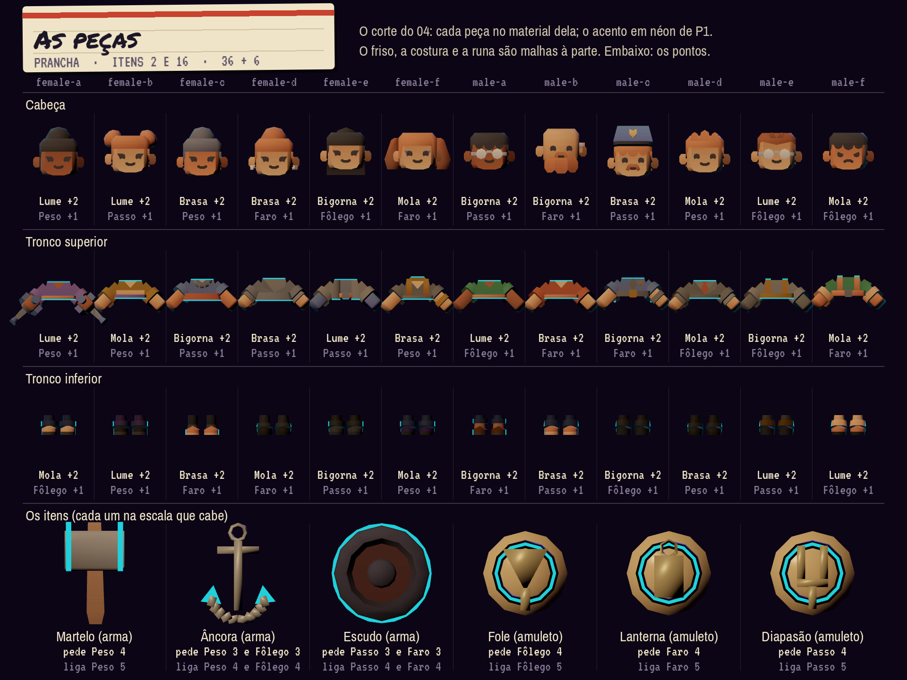
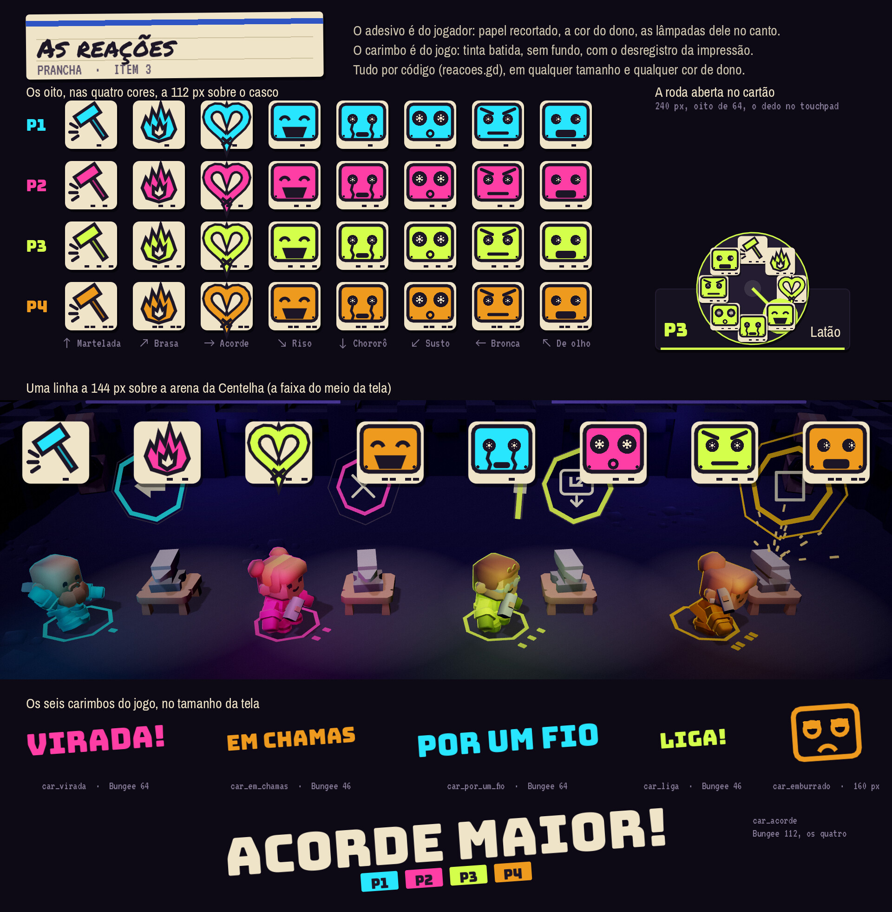
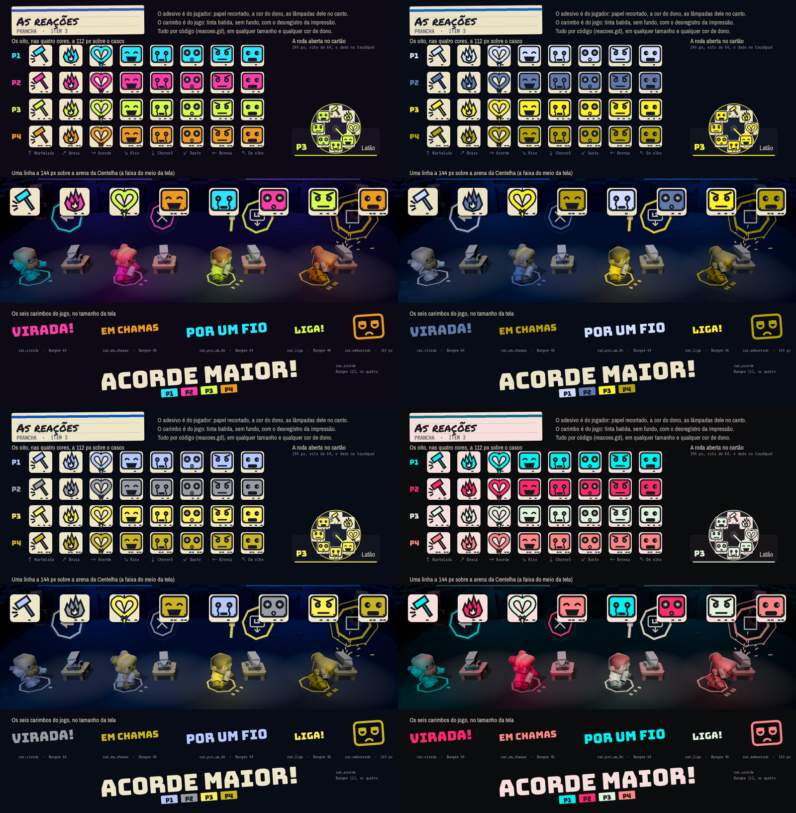
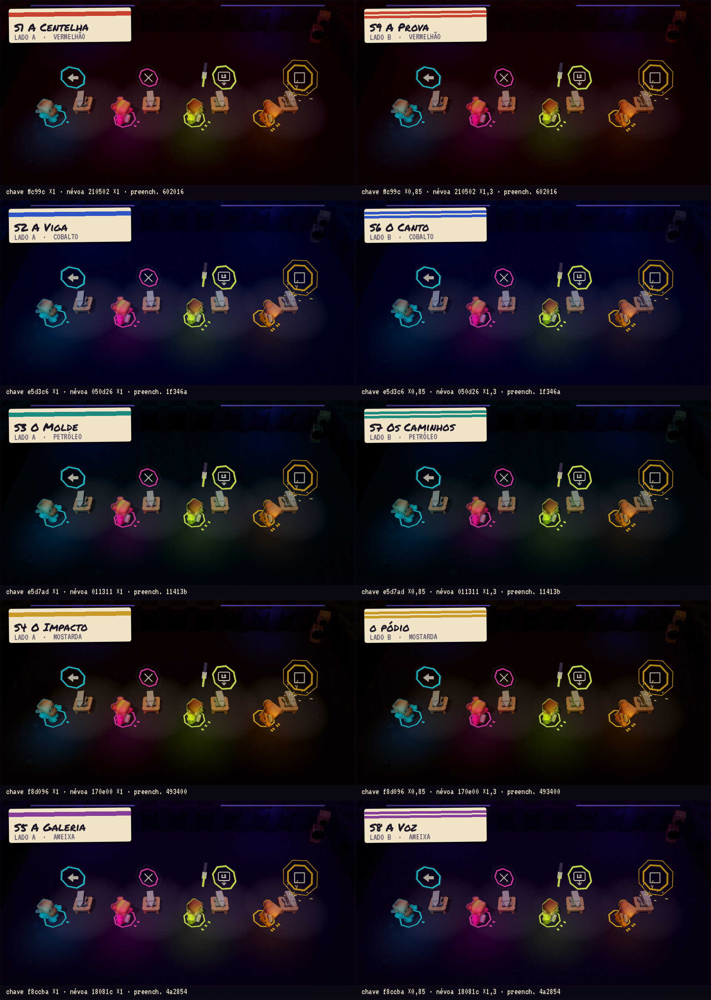
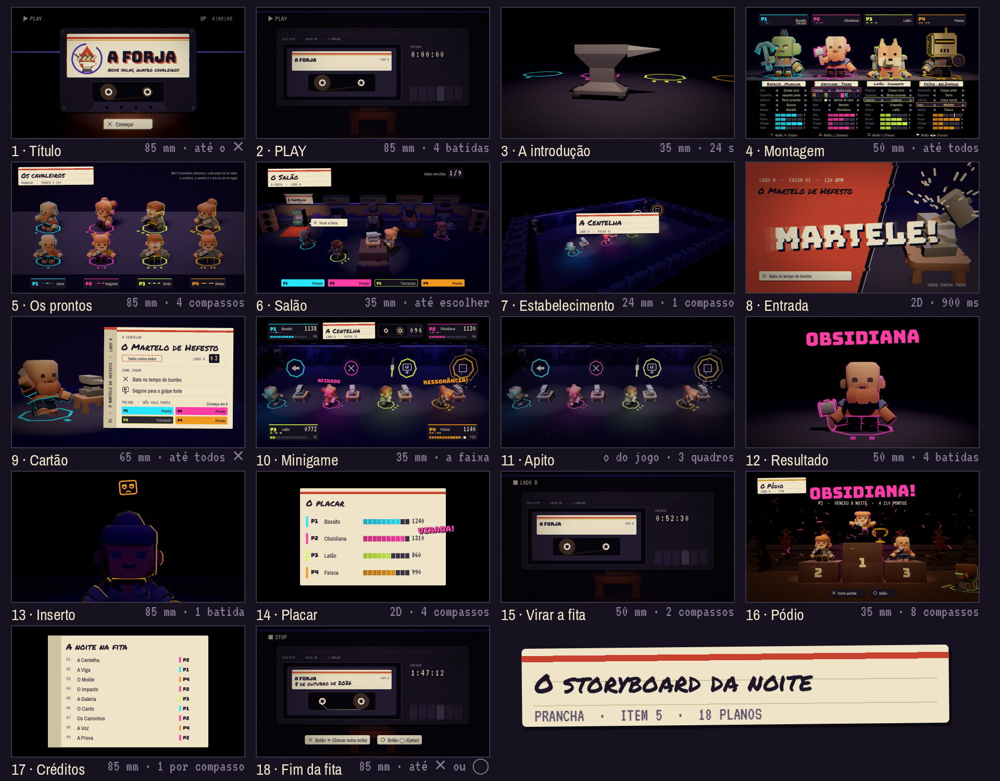
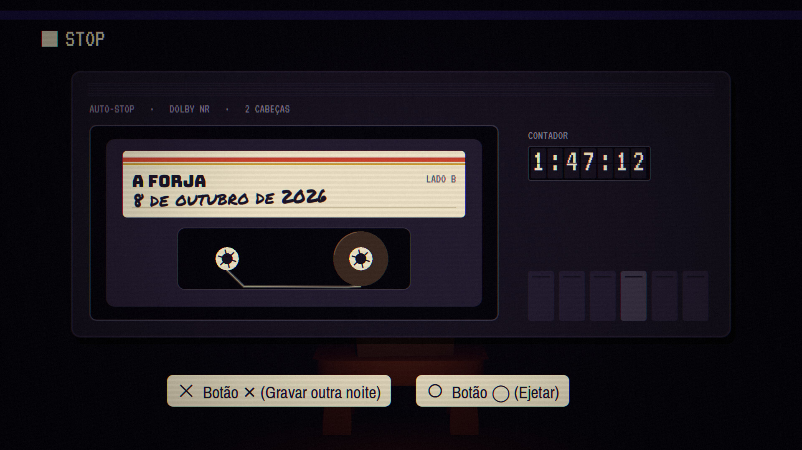
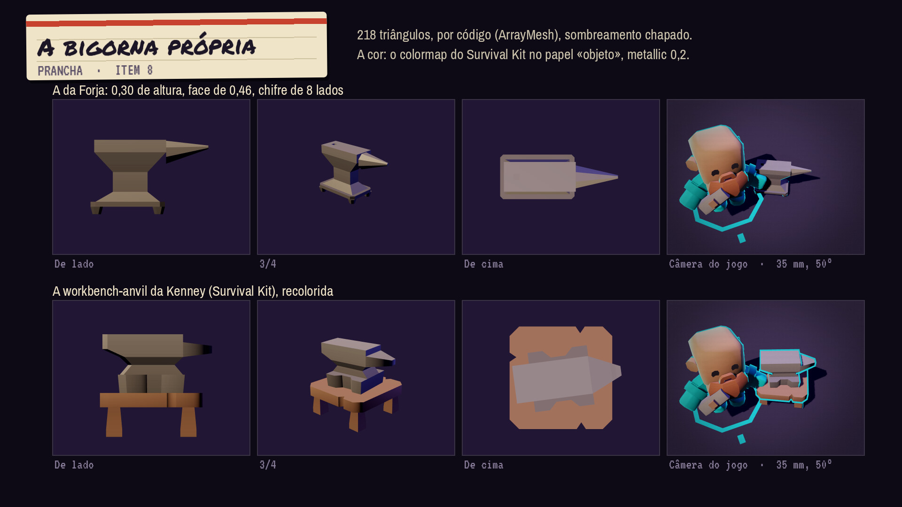
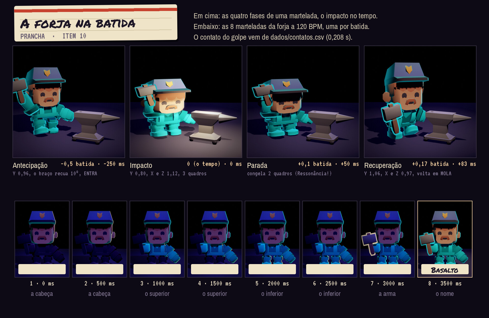
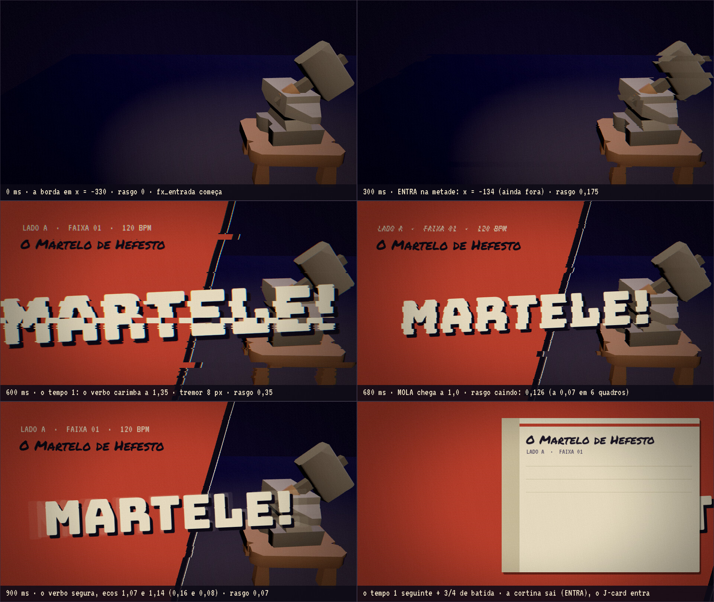

A Forja em fita
Direção de arte · lado A · os quadros de verdadeTodos os quadros abaixo saíram do Godot, no renderizador do jogo (Compatibility), com os pacotes Kenney que já estão no projeto, recoloridos por papel. Nenhuma imagem foi gerada por IA. Épico com respiros de humor: o mundo é escuro e quieto, os jogadores são as únicas luzes fortes, e a etiqueta de papel é onde o jogo escreve. Os sons também: 77 arquivos feitos por código, com o tratamento de fita, e cada um toca aqui.
A alma
Antes de qualquer quadroA noite é uma fita
Quatro amigos sentam no sofá e gravam uma fita. Cada minigame é uma faixa. A noite tem lado A (o corpo: seções 1 a 5) e lado B (o espírito: seções 6 a 9). O contador do deck anda de verdade, do PLAY ao fim. A etiqueta é escrita à mão. Quando a fita enrosca, a imagem desregistra e o som desafina: é a Dissonância, o vilão, com a cara de um defeito que todo mundo conhece.
Os cavaleiros
Cada jogador monta o seu cavaleiro peça por peça e dá o nome. Cada armadura soa uma nota só: Dó, Ré, Fá e Sol, a tônica, a segunda, a quarta e a quinta. Juntas fazem o acorde da Forja, suspenso, que cabe sobre as 45 faixas em tom menor. O cavaleiro é o único néon saturado da tela; a cor dele é a do controle na mão.
| o épico mora em | o humor mora em |
|---|---|
| a entrada (o verbo grande, o rasgo da fita) | a falha física (o martelo que quica) |
| o pico (a música dobra, a luz abre 20 %) | o último no resultado (o close de uma batida) |
| o vencedor (câmera baixa, 85 mm, contra-luz) | a derrota (a fita que desacelera a 0,25× em 700 ms) |
| o pódio (simetria, o nome na cor do dono) | as reações (os adesivos) |
| o fim da fita (o contador para no tempo real da noite) | o pódio, só no canto do último lugar |
- A fita é nossaPapel, caneta, contador, carretel. Nada parece janela de sistema.
- O néon tem donoSó o que é de um jogador brilha saturado. O cenário é tinta e sombra.
- Tudo cai na batidaAnimação, corte, luz, carimbo, vibração: na grade do compasso.
- Épico no peito, riso no corpoA grandeza vem da música e da câmera; a graça, da física. Nenhuma palavra reprova.
- Ver, ouvir e sentir juntosImagem, som na TV, som no controle e vibração no mesmo quadro de 16,7 ms.
O texto inteiro: a bíblia de arte, «A alma» e «Os pilares». Quando o texto e um quadro discordam, vale o texto.
Antes e depois
A Centelha · faixa 01

Os quadros-chave
Do título ao pódio


A Kenney na fita
Colormap · antes e depoisOs pacotes não são trocados, são recoloridos. Cada pacote ganha um papel, e a cor dele passa pelo OKLab: a claridade cai na faixa do papel, o croma encolhe, e um fio do violeta do cenário entra por cima. Assim cinco pacotes de paletas diferentes viram um lugar só, e os jogadores continuam sendo o que mais brilha.

O cavaleiro montável
Itens 1, 2 e 9 da produçãoCada um dos 12 Mini Characters da Kenney é cortado em três peças (cabeça, tronco superior, tronco inferior), pelo osso de cada triângulo. Qualquer cabeça vai em qualquer corpo. As 36 peças e os 6 itens são todos de verdade, no jogo de hoje, sem modelo novo.


E a tabela dos contatos (item 9): dados/contatos.csv, o quadro em que cada uma das 32 animações acerta. O golpe acerta a 0,208 s; a forja e o movimento leem daí.
As reações
Os emojis da Forja · item 3Os oito adesivos são do jogador: papel recortado na cor do dono, escolhidos na roda do touchpad. Os seis carimbos são do jogo: tinta batida, sem fundo. Tudo por código, em qualquer tamanho e qualquer cor de dono, e cada adesivo toca o reacao_pop.


A luz e a noite
Itens 4, 5 e 6




A forja na batida
Itens 8, 10 e 11
workbench-anvil. Na câmera do jogo o chifre se vê sem procurar.

O som
77 arquivos · 48 kHz · por códigoNenhum som de IA. Cada arquivo sai do gerar_sons.py, só com a biblioteca padrão e semente fixa, e passa pelo tratamento de fita: wow de 0,5 Hz, flutter de 9 Hz, a saturação, o corpo em 90 Hz, o teto em 12 kHz e o chiado a −62 dBFS. Abaixo, os que mais importam; depois, todos.
As assinaturas, os pios e os julgamentos44 sons
ass_p1400 ms · -12 dBFSpio_p1_segunda300 ms · -12 dBFSpio_p1_terca300 ms · -12 dBFSpio_p1_quarta300 ms · -12 dBFSpio_p1_quinta300 ms · -12 dBFSpio_p1_quinta_baixo300 ms · -12 dBFSpio_p1_oitava300 ms · -12 dBFSjul_ressonancia_p1180 ms · -12 dBFSjul_afinado_p1150 ms · -12 dBFSjul_quase_p1120 ms · -12 dBFSjul_erro_p1220 ms · -12 dBFSass_p2400 ms · -12 dBFSpio_p2_segunda300 ms · -12 dBFSpio_p2_terca300 ms · -12 dBFSpio_p2_quarta300 ms · -12 dBFSpio_p2_quinta300 ms · -12 dBFSpio_p2_quinta_baixo300 ms · -12 dBFSpio_p2_oitava300 ms · -12 dBFSjul_ressonancia_p2180 ms · -12 dBFSjul_afinado_p2150 ms · -12 dBFSjul_quase_p2120 ms · -12 dBFSjul_erro_p2220 ms · -12 dBFSass_p3400 ms · -12 dBFSpio_p3_segunda300 ms · -12 dBFSpio_p3_terca300 ms · -12 dBFSpio_p3_quarta300 ms · -12 dBFSpio_p3_quinta300 ms · -12 dBFSpio_p3_quinta_baixo300 ms · -12 dBFSpio_p3_oitava300 ms · -12 dBFSjul_ressonancia_p3180 ms · -12 dBFSjul_afinado_p3150 ms · -12 dBFSjul_quase_p3120 ms · -12 dBFSjul_erro_p3220 ms · -12 dBFSass_p4400 ms · -12 dBFSpio_p4_segunda300 ms · -12 dBFSpio_p4_terca300 ms · -12 dBFSpio_p4_quarta300 ms · -12 dBFSpio_p4_quinta300 ms · -12 dBFSpio_p4_quinta_baixo300 ms · -12 dBFSpio_p4_oitava300 ms · -12 dBFSjul_ressonancia_p4180 ms · -12 dBFSjul_afinado_p4150 ms · -12 dBFSjul_quase_p4120 ms · -12 dBFSjul_erro_p4220 ms · -12 dBFS
As vitórias, a derrota, os carimbos e os jingles13 sons
fx_vitoria_p11000 ms · -9 dBFSfx_vitoria_p21000 ms · -9 dBFSfx_vitoria_p31000 ms · -9 dBFSfx_vitoria_p41000 ms · -9 dBFSfx_derrota1400 ms · -6 dBFScar_em_chamas600 ms · -9 dBFScar_por_um_fio700 ms · -9 dBFScar_liga400 ms · -9 dBFScar_acorde1200 ms · -9 dBFSjin_apito1000 ms · -6 dBFSjin_virada2000 ms · -9 dBFSjin_entrada_tique120 ms · -9 dBFSjin_entrada_vai400 ms · -6 dBFS
A fita e o corpo11 sons
fx_play400 ms · -6 dBFSfx_stop250 ms · -6 dBFSfx_entrada900 ms · -6 dBFSfx_rebobinar900 ms · -6 dBFSfx_virar1600 ms · -6 dBFSfx_autostop200 ms · -6 dBFSfx_caneta400 ms · -6 dBFSfx_boing250 ms · -6 dBFSfx_tropeco_0350 ms · -6 dBFSfx_tropeco_1350 ms · -6 dBFSfx_tropeco_2350 ms · -6 dBFS
A interface8 sons
ui_tique35 ms · -12 dBFSui_confirma90 ms · -12 dBFSui_volta90 ms · -12 dBFSui_peca120 ms · -12 dBFSui_trava80 ms · -12 dBFSui_sorteio480 ms · -12 dBFSui_tecla30 ms · -12 dBFSreacao_pop120 ms · -12 dBFS
O ambiente1 sons
amb_salao8000 ms · -18 dBFS
Prova 03 O som e o mapa do áudio, onde cada um está «gerado» com o caminho. gerar_sons.py --conferir confere o formato, o teto, a duração e o pico de cada linha.
A régua da diversão
Dez itens · um minigame passa quando os dez passam- A graça aparece em 10 sCada lugar já fez uma nota que conta, e a sala já viu uma falha.
- Uma ideia sóUm verbo, um objeto, uma regra em até 25 palavras.
- Ensina sem falarNenhuma frase na tela durante o jogo: o objeto anuncia o tempo.
- Um momento de grito, com nomeEscrito na seção, com janela em segundos e rastro.
- A curva sobe até o fimNo 2.º terço, 1,5× as notas do 1.º; a reta nas últimas 16 batidas.
- A falha é engraçada e fica à vistaMuda a silhueta em 30 % por 1 batida; o rastro dura 2 s.
- Quem perde segue jogandoNinguém fica mais de 8 batidas sem nada para fazer.
- A câmera mostra a graçaO momento nos 60 % do meio, o objeto com 8 % da altura.
- O impacto é exagerado e cai na batidaImagem, som e vibração no mesmo quadro de 16,7 ms.
- Quem está na frente se vê no mundoA liderança aparece no cenário, não só no placar.
Cada item com o teste do robô e o da prancha: a diversão da Forja.
A paleta
Cada cor com um trabalhoA fita e o casco
O fundo e as placas. Nada aqui brilha.
#0d0a16#17121f#241c30#3a3346A etiqueta
O papel onde o jogo escreve: títulos, cartões, o pódio.
#efe4c8#cfc2a0#1c1626#5a4f66A luz do lugar
O violeta é o único néon da arquitetura e nunca passa de L 50. O tungstênio é luz, nunca traço.
#4a3aa8#1d1638#ffd9a8Os jogadores
Os únicos néons saturados da tela. Nenhuma dessas quatro cores aparece fora do jogador dono dela.
#29e6ff#ff3ea5#d4ff4a#ee9a1eAs seções
Tinta impressa, nunca néon: a faixa da etiqueta de cada lado.
#c8432f#2f55c4#1f8a7e#c79a2a#86409aO erro
Só no desregistro da Dissonância.
#ff2a4a#2a6bffAs letras e a luz
Quatro fontes · o que o Godot dá- BungeeO grito: MARTELE!, FAÍSCA!, A FORJA. Só em caixa alta, só grande.
- VT323A máquina: placar, contador, LADO A · FAIXA 01, PLAY.
- Archivo NarrowA fala: instrução, botão, menu. Todo texto que se lê inteiro.
- Permanent MarkerA caneta na etiqueta: o nome do minigame, o subtítulo. Nunca em instrução.
- Glow funcionaNo Compatibility o glow clareia o fundo cerca de 3,5 vezes; o estudo compensa com 0,45 no fundo.
- Sem SSAOO contato no chão vem do aro do jogador e de sombra pintada, não de oclusão.
- Uma sombraSó a luz direcional projeta sombra. As outras luzes são de cor, não de forma.
- Pós-processo da fitaGrão, linha de varredura leve e o rasgo de VHS nas transições. Quatro shaders: contorno, cavaleiro, néon e pós da fita.
As decisões
08/10/2026- A direçãoEscolhida a Fita Magnética com a Kenney recolorida. Esta página mora no repositório e guia todo trabalho visual da Forja. A bíblia de arte (o texto, os tokens no
tema.gde os portões que reprovam cor fora de token, fonte fora das quatro e texto abaixo de 30 px) sai desta página. - As cores dos jogadoresTrocadas nos dois lugares, na tela e na luz do controle: cianomagentalimãoâmbar. Saem o azul, o vermelho, o verde e o rosa de hoje.
- O logoFica o logo de hoje (a gota com os martelos), ajustado para funcionar na etiqueta: as cores dele passaram para os tokens da Fita (o quadro 07).
- A bigornaUma bigorna própria, com o chifre visível, no estilo da Kenney: 218 triângulos por código (o quadro 16). A do Survival Kit lê como bloco de longe.
- O acorde da ForjaDó, Ré, Fá e Sol, um acorde suspenso: a segunda, a quarta e a quinta cabem no menor natural, e as 45 faixas são em tom menor. Sai o «Dó com sétima maior».
- O som é feito aquiOs 77 sons da bíblia saem do
gerar_sons.py, por código, com semente fixa. A cópia paragodot/assets/sons/e a troca no jogo são da H11.
O arquivo
Todo documento por trás desta páginaA bíblia de artearte/ · 13 arquivos · o porquê de cada quadro e de cada som
- 01-cinema.md01 O cinema
- 02-cor-e-letra.md02 A cor e a letra
- 03-som.md03 O som
- 04-o-cavaleiro.md04 O cavaleiro montável
- 05-movimento.md05 O movimento
- 06-interface-e-texto.md06 A interface e o texto
- 07-vfx.md07 O brilho e os efeitos
- 09-reacoes.md09 As reações
- 10-acessibilidade.md10 A acessibilidade
- 11-o-que-nunca.md11 O que nunca
- 12-portoes.md12 Os portões
- PRODUCAO.mdA produção
- README.mdA bíblia de arte da Forja
Os dados da artearte/dados/ · 3 arquivos · as medidas que os quadros leem
- contatos.csvtabela
- contraste.csvtabela
- reacoes.csvtabela
A diversãodiversao/ · 12 arquivos · a régua e as nove seções, minigame a minigame
- I-a-centelha.mdI — A Centelha: a diversão
- J-a-viga.mdJ — A Viga: a diversão
- K-o-molde.mdK — O Molde: a diversão
- L-o-impacto.mdL — O Impacto: a diversão
- M-a-galeria.mdM — A Galeria: a diversão
- N-o-canto.mdN — O Canto: a diversão
- O-os-caminhos.mdO — Os Caminhos: a diversão
- P-a-voz.mdP — A Voz: a diversão
- Q-a-prova.mdQ — A Prova: a diversão
- R-o-relampago.mdR — O Relâmpago: a diversão
- README.mdA diversão da Forja
- momentos.csvtabela
Os sistemassistemas/ · 9 arquivos · o RPG do cavaleiro: peças, itens, stats
- README.mdO RPG da Forja
- arquetipos.csvtabela
- conferir.pyscript
- itens.csvtabela
- minigames.csvtabela
- nomes.csvtabela
- pecas.csvtabela
- regras.csvtabela
- stats.csvtabela
O áudioaudio/ · 1 arquivos · todo som e toda música, um por linha
- mapa.csvtabela
A pesquisa do DualSensepesquisa/ · 47 arquivos · o que cada minigame pede do controle
- I1-o-martelo-de-hefesto.mdI1, O Martelo de Hefesto: a pesquisa do DualSense
- I2-marcha-dos-escudeiros.mdI2, Marcha dos Escudeiros: a pesquisa do DualSense
- I3-portoes-de-neon.mdI3, Portões de Néon: a pesquisa do DualSense
- I4-o-fole.mdI4, O Fole: a pesquisa do DualSense
- I5-a-esteira-de-escoria.mdI5, A Esteira de Escória: a pesquisa do DualSense
- J1-a-viga.mdJ1, A Viga: a pesquisa do DualSense
- J2-pendulos-do-caos.mdJ2, Pêndulos do Caos: a pesquisa do DualSense
- J3-patinacao-de-dados.mdJ3, Patinação de Dados: a pesquisa do DualSense
- J4-o-balao-dos-foles.mdJ4, O Balão dos Foles: a pesquisa do DualSense
- J5-mira-optica.mdJ5, Mira Óptica: a pesquisa do DualSense
- K1-o-molde.mdK1, O Molde: a pesquisa do DualSense
- K2-quebra-gelo.mdK2, Quebra-Gelo: a pesquisa do DualSense
- K3-hackeando-o-terminal.mdK3, Hackeando o Terminal: a pesquisa do DualSense
- K4-a-pinca.mdK4, A Pinça: a pesquisa do DualSense
- K5-o-carimbo.mdK5, O Carimbo: a pesquisa do DualSense
- L1-o-cerco.mdL1 — O Cerco: a pesquisa do DualSense
- L2-fuga-do-tita.mdL2 — Fuga do Titã: a pesquisa do DualSense
- L3-curto-circuito.mdL3 — Curto-Circuito: a pesquisa do DualSense
- L4-martelos-termicos.mdL4 — Martelos Térmicos: a pesquisa do DualSense
- L5-a-prensa.mdL5 — A Prensa: a pesquisa do DualSense
- M1-a-galeria.mdM1 — A Galeria: a pesquisa do DualSense
- M2-arco-de-neon.mdM2 — Arco de Neon: a pesquisa do DualSense
- M3-metralhadora-de-feiticos.mdM3 — Metralhadora de Feitiços: a pesquisa do DualSense
- M4-espada-de-fita.mdM4 — Espada de Fita: a pesquisa do DualSense
- M5-a-catapulta.mdM5 — A Catapulta: a pesquisa do DualSense
- N1-o-canto.mdN1 — O Canto: a pesquisa do DualSense
- N2-eco-do-abismo.mdN2 — Eco do Abismo: a pesquisa do DualSense
- N3-coral-dos-quatro.mdN3 — Coral dos Quatro: a pesquisa do DualSense
- N4-codigo-do-dragao.mdN4 — Código do Dragão: a pesquisa do DualSense
- N5-corta-fio.mdN5 — Corta-Fio: a pesquisa do DualSense
- O1-os-caminhos.mdO1 — Os Caminhos (S07_J31): a nota de pesquisa
- O2-neblina-de-dados.mdO2 — Neblina de Dados (S07_J32): a nota de pesquisa
- O3-passo-no-fosso.mdO3 — Passo no Fosso (S07_J33): a nota de pesquisa
- O4-fuga-do-mecha-cego.mdO4 — Fuga do Mecha Cego (S07_J34): a nota de pesquisa
- O5-engrenagens-sincopadas.mdO5 — Engrenagens Sincopadas (S07_J35): a nota de pesquisa
- P1-a-voz.mdP1 — A Voz (S08_J36): a nota de pesquisa
- P2-o-sopro-no-fole.mdP2 — O Sopro no Fole (S08_J37): a nota de pesquisa
- P3-zero-absoluto.mdP3 — Zero Absoluto (S08_J38): a nota de pesquisa
- P4-grito-de-guerra.mdP4 — Grito de Guerra (S08_J39): a nota de pesquisa
- P5-palmas-da-forja.mdP5 — Palmas da Forja (S08_J40): a nota de pesquisa
- Q1-a-prova.mdQ1 — A Prova (S09_J41): a nota de pesquisa
- Q2-roubo-de-bateria.mdQ2 — Roubo de Bateria (S09_J42): a nota de pesquisa
- Q3-mecha-de-dois-pilotos.mdQ3 — Mecha de Dois Pilotos (S09_J43): a nota de pesquisa
- Q4-ruge-o-reator.mdQ4 — Ruge o Reator (S09_J44): a nota de pesquisa
- Q5-o-ultimo-acorde.mdQ5 — O Último Acorde (S09_J45): a nota de pesquisa
- R-o-relampago.mdR — O Relâmpago (RELAMPAGO): a nota de pesquisa
- dualsense.mdO DualSense: o catálogo